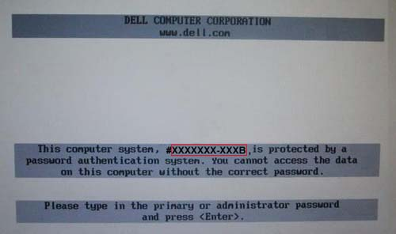
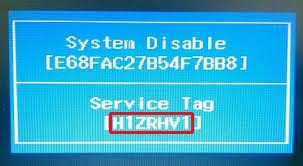
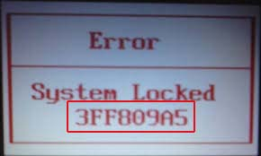
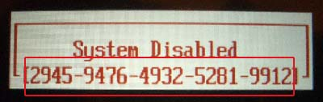
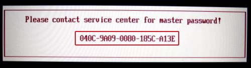
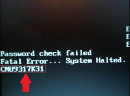

1 - What is a BIOS Hash?
2 - What does BIOS Pass Bypass do?
3 - What will I need?
3.1 - How do I acquire my BIOS Hash?
3.1.1 - Images of BIOS Hashes on different systems
3.2 - Obtaining a password without a hash
In some BIOSes, by default or after entering a wrong password for 3 times, a hash will be displayed, accompanying a message telling the user that the system has been locked. BIOS Pass Bypass can give you a working password using the displayed hash.
BIOS restricts access to a computer using a password in some places, namely:
For old BIOSes with a master password, the only thing you need is the name of the manufacturer of the BIOS. In other cases, you have to obtain the BIOS hash.
You can obtain a BIOS hash, using one of these methods:
Here you can see some instances of BIOS hashes, denoted by a red rectangle:






For old BIOSes that don't provide a hash, you can go to the "Password for hash-less BIOSes" section and after choosing a make and model, see the master passwords for that specific BIOS.
Notice: If there were more than 1 password, try all of them, until you find the correct one.
Notice: In some cases, the algorithm used for obtaining a password from a hash
is case sensitive. For example the passwords obtained for the following two hashes
are different.
8WG0865-959B, 8wg0865-959b